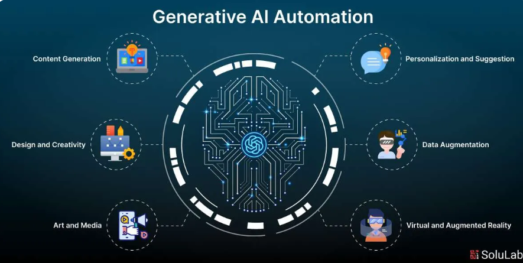

¿Qué es la automatización e integración con IA?
La integración y automatización con Inteligencia Artificial consiste en conectar sistemas de software, APIs e infraestructura para realizar tareas complejas sin intervención humana constante. A diferencia de la automatización tradicional basada en reglas estáticas, la IA permite procesar datos no estructurados, tomar decisiones dinámicas y aprender de patrones en tiempo real.
Hoy en día, las organizaciones aplican flujos de trabajo inteligentes que conectan servicios en la nube para procesar documentos, responder a solicitudes de clientes y analizar grandes volúmenes de datos en cuestión de segundos.
Componentes clave del ecosistema
Para construir una solución automatizada con IA se utilizan diversas herramientas y metodologías modernas:
- APIs e Integraciones REST: Conectores que permiten la comunicación entre modelos de IA y aplicaciones locales o en la nube.
- Modelos de Lenguaje y Visión: Algoritmos encargados de interpretar texto, voz e imágenes.
- Orquestadores de flujos: Plataformas como Microsoft Power Automate, Zapier o scripts personalizados en Python que ejecutan la lógica del negocio.
Representación de un flujo automatizado

Comparativa de herramientas de automatización
| Herramienta / Entorno | Tipo de Solución | Caso de Uso Principal |
|---|---|---|
| Microsoft Power Automate | Low-Code / No-Code | Generación y procesamiento automático de documentos empresariales. |
| Python (Scripts + APIs) | Desarrollo Personalizado | Transferencia de archivos y sincronización de datos entre nubes privadas. |
| Zapier / Make | Plataforma iPaaS | Conexión rápida entre aplicaciones web y modelos de lenguaje. |